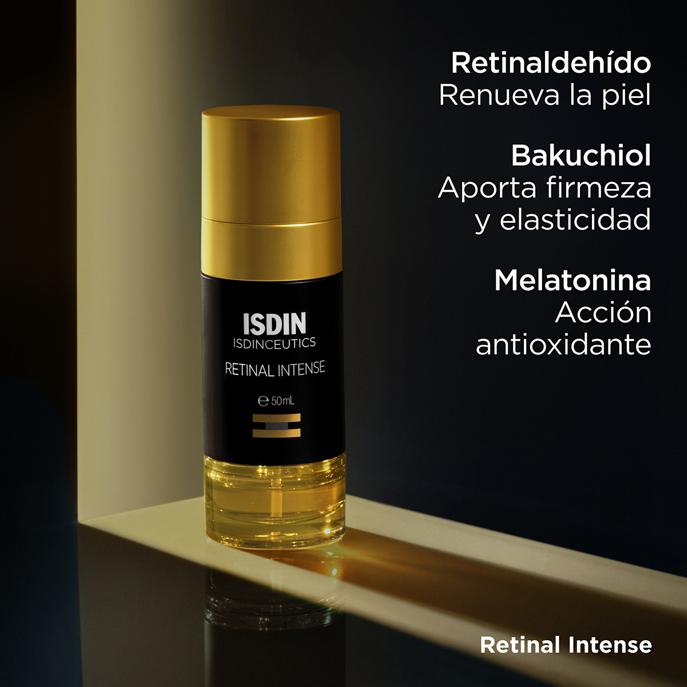

ISDIN Isdinceutics
Retinal Intense — Sérum facial
Bs 780¿Qué es? Es un tratamiento cosmético facial que contiene retinaldehído, un derivado de la vitamina A. La imagen también menciona bakuchiol y melatonina.
¿Para qué sirve? Está destinado a mejorar la textura de la piel y reducir la apariencia de líneas de expresión y signos del envejecimiento.
Beneficios
- Favorece la renovación de la superficie de la piel.
- Puede mejorar la textura y uniformidad del rostro.
- Ayuda a suavizar la apariencia de las líneas finas.
- Sus ingredientes antioxidantes contribuyen a proteger la piel frente al estrés oxidativo.
Características
- Presentación en frasco con dosificador.
- Envase negro y dorado.
- Fórmula que incluye retinaldehído, según la imagen.
Precauciones
- Puede causar irritación, sequedad, enrojecimiento o descamación.
- Utilizar protector solar durante el día.
- No combinarlo por cuenta propia con otros retinoides o exfoliantes fuertes.
- En adolescentes, conviene consultar con un dermatólogo antes de utilizar un tratamiento con retinaldehído.